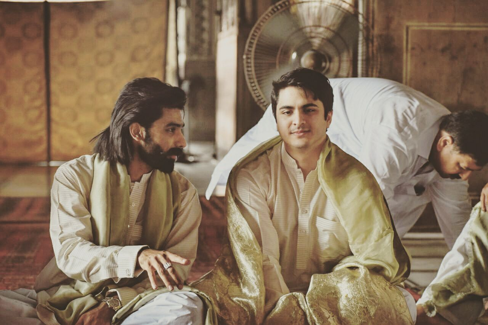
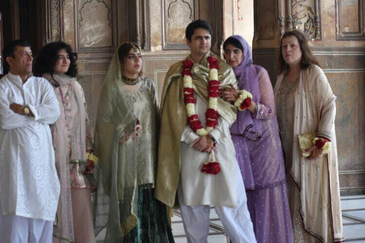
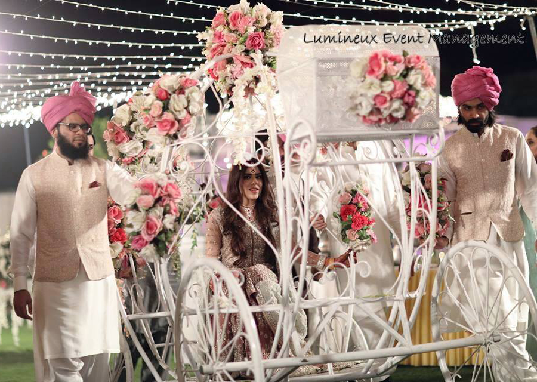
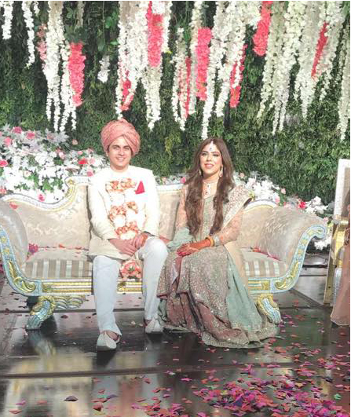

Definitions
First, let me start with the list of events along with their definitions.
- Mehdi
- The Mehndi ceremony is held the night before the wedding as a way of wishing the bride good health and success as she makes her journey on to the marriage.
- Baraat
- Baraat is a celebratory wedding procession of the groom to the Nikah event.
- Nikah
- The Nikah is the formal marriage ceremony where a marriage contract is signed by both the bride and the groom in the presence of close family members. The Nikah is typically performed by a religious scholar at a mosque, who is licensed by the government to perform the ceremony. The dinner is served after the bride and group say their vows.
- Walima
- The Walima is the formal reception hosted by the bridegroom and his family. This is a way of welcoming the bride and her family into the groom's family; it is typically a huge celebration with relatives and friends as the guests of both families. There is food served and entertainment during this occasion.
Nikah
Solaman at Nikah
 Here are some images of the Nikah where a marriage contract was signed.
topOur Family at the Nikah
 Here is our family standing inside the Mosque after the Nikah.
topNikah at Night
Nika Hall
 On the evening of the Nikah the bride’s family hosted a large party at a hall that included
dancing, songs, and food.
On the evening of the Nikah the bride’s family hosted a large party at a hall that included
dancing, songs, and food.
The night included professional musicians as well as performances by family and
friends.
Here is our extended family photo taken in the Nika hall.
Bride Arrival
 On the evening of the Nikah, the brides’ family hosted a large party at a hall that included dancing, songs, and food. The night included professional musicians as well as performances by family and friends. Here is where the bride arrived in a carriage being led by her two brothers.
topWalima
 The Walima was held the next day hosted by the groom’s side. Our family greeted guests by throwing roses over their heads. Our family also present garland to the bride's Mother and Father which is worn around the necks. When Solaman and Sasha arrived, Sidra my youngest daughter was given the basket of roses to throw at the bride and groom. But rather than throwing over their head she being mischievous, took handfuls and threw right at her brother getting flower peddles in his hair.
top